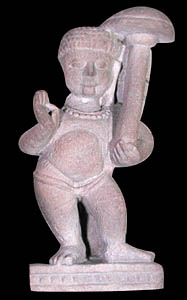

VamanaThe fifth incarnation of Vishnu was a dwarf named Vamana. Vamana was born as the son of a rishi named Kashyapa. 
Vishnu was sent to earth as Vamana after a pious and generous king had gained control over the kingdom of the gods. The gods had to leave their kingdom and wanted to win it back. Vamana asked the king to grant him as much land as he could cover in three steps. The king was a generous man and granted the dwarf his request. However, when it was time to actually take the steps, Vamana grew and grew until he was very, very tall. In one step he covered the earth and in the second step he covered the heavens. Since the king had been so generous to grant the dwarf his wish, he was given control of the nether regions known as Patala. |